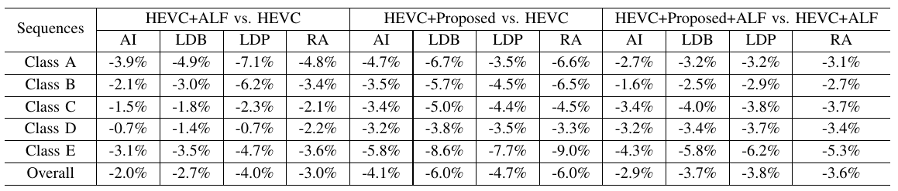
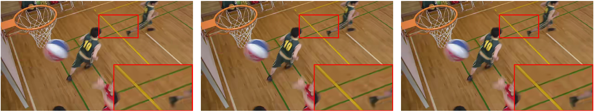

Content-Aware Convolutional Neural Network for In-loop Filtering in High Efficiency Video Coding
Chuanmin Jia1 Shiqi Wang2 Xinfeng Zhang3 Shanshe Wang1 Jiaying Liu1 Shiliang Pu4 Siwei Ma1
1PKU 2CityU HK 3UCAS 4Hikvision
[Paper(full)] [Dataset] [Code]
Abstract
Convolutional neural network (CNN) has attracted tremendous attention and achieved great success in many image processing tasks. In this paper, we focus on CNN technology joining with image restoration to facilitate video coding performance, and propose the content-aware CNN based in-loop filtering for High Efficiency Video Coding (HEVC). In particular, we quantitatively analyze the structure of the proposed CNN model from multiple dimensions to make the model interpretable and optimal for CNN based loop filtering. More specifically, each Coding Tree Unit (CTU) is treated as an independent region for processing, such that the proposed content-aware multimodel filtering mechanism is realized by the restoration of different regions with different CNN models under the guidance of the discriminative network. To adapt the image content, the discriminative neural network is learned to analyse the content characteristics of each region for the adaptive selection of the deep learning model. The CTU level control is also enabled in the sense of rate-distortion optimization (RDO). To learn the CNN model, an iterative training method is proposed by simultaneously labeling filter categories at CTU level and fine-tuning the CNN model parameters. The CNN based in-loop filter is implemented after sample adaptive offset (SAO) in HEVC, and extensive experiments show that the proposed approach significantly improves the coding performance and achieves up to 10.0% bit-rate reduction. On average 4.1%, 6.0%, 4.7% and 6.0% bit-rate reduction can be obtained under all intra, low delay, low delay P and random access configurations, respectively.
Paper
IEEE Xplore, 2018.
Citation
C. Jia, S. Wang, X. Zhang, S. Wang, J. Liu, S. Pu and S. Ma, "Content-Aware Convolutional Neural Network for In-loop Filtering in High Efficiency Video Coding", IEEE Trans. on Image Processing, 2019. Bibtex
Code: Github
Our Experimental Results
|
 Bit-rate reduction by proposed method on the top of HEVC and HEVC+ALF. |
Visual Comparisons
|
 Reconstructed frame of test sequence BasketballDrill by, left: HEVC, middle: VRCNN, right: proposed. |
Acknowledgement
The authors would like to express their gratitude to Shurun Wang and Shuaiyu Liang for the help of running simulations.
Citation
If you find this useful for your research, please use the following.
@article{jia2019content,
title={Content-Aware Convolutional Neural Network for In-loop Filtering in High Efficiency Video Coding},
author={Chuanmin Jia and Shiqi Wang and Xinfeng Zhang and Shanshe Wang and Jiaying Liu and Shiliang Pu and Siwei Ma},
journal={IEEE Transactions on Image Processing},
year={2019}
}

{kind=link}